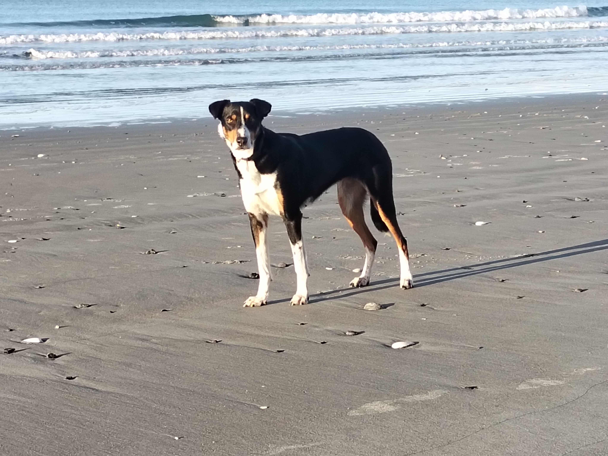

Unit 4: Farm Dogs & Working with Sheep
Overview

This two-lesson mini-unit introduces the role of farm dogs in livestock management, safety, and animal welfare.
- Lesson 1 (tomorrow): Building background knowledge and planning observations.
- Lesson 2 (Friday): Live practical session with Jess (your sheepdog).
Learning Goals
By the end of this unit, students can:
- Explain at least three jobs farm dogs perform on working farms.
- Describe safe behaviour around a working dog.
- Record structured observations of dog behaviour using correct farm language.
- Connect dog actions (movement, positioning, commands) to stock movement outcomes.
Lesson 1: Introduction to Farm Dogs (Classroom/yard, 50-60 min)
Success Criteria
Students can:
- Identify key traits of a working sheepdog.
- Match common commands to expected dog actions.
- Prepare an observation sheet for Friday’s practical lesson.
Materials
- Whiteboard and markers
- Printed copy of the observation table (below)
- Clipboards (if heading outside for short movement demo)
Lesson Sequence
- Hook (5 min):
- Ask: “What makes a farm dog different from a pet dog?”
- Gather ideas and sort into categories: behaviour, training, purpose.
- Mini-teaching (10-15 min):
- Roles of farm dogs: gathering, driving, holding, backing, and yard work.
- Key welfare concepts: calm pressure, no rough handling, handler responsibility.
- Commands and communication (10 min):
- Introduce likely commands students may hear on Friday (e.g. stop, lie down, walk up, come by, away, steady).
- Discuss why consistent commands matter for animal safety.
- Movement mapping task (15 min):
- In pairs, students draw a small paddock and plot where dog, sheep, and handler should stand to move sheep through a gate.
- Share and compare different movement plans.
- Prepare for Friday (10 min):
- Hand out observation sheet and explain what students must record during Jess’s session.
- Review class expectations for safe conduct around Jess and sheep.
Formative Check
- Exit ticket: “One thing Jess will need to do on Friday” + “One safety rule I must follow.”
Lesson 2: Practical with Jess (Friday, 50-60 min)
Success Criteria
Students can:
- Observe and accurately describe Jess’s response to commands.
- Explain how Jess’s position changes sheep movement.
- Demonstrate safe and respectful behaviour around working animals.
Safety Brief (Start of lesson)
- Stay behind the marked observation line unless invited forward.
- No sudden movements, shouting, or approaching Jess without permission.
- Follow teacher instructions immediately around livestock.
- If unsure, step back and ask.
Practical Sequence
- Re-cap and briefing (5 min):
- Review previous lesson’s commands and safety expectations.
- Jess introduction (5 min):
- Brief profile: breed/type, age, training, daily farm roles.
- Demonstration rounds (20-25 min):
- Round 1: Basic control (stop/lie down/walk up).
- Round 2: Directional work around stock.
- Round 3: Moving stock toward a target point.
- Students complete observation table during each round.
- Student analysis (10-15 min):
- Pairs compare notes and identify one “effective handler move” and one “effective Jess behaviour.”
- Debrief (5-10 min):
- Whole-class discussion: What did Jess do that most affected sheep direction and speed?
Quick Assessment Task
Students submit a short paragraph:
“Describe one command, Jess’s response, and the effect on sheep movement. Include one safety behaviour you followed.”
Student Observation Table (print or copy)
| Command heard | Jess’s action | Sheep response | Why it worked (or didn’t) |
|---|---|---|---|
Optional Extension / Homework
- Create a one-page “Working Dog Guide for New Farm Students” including:
- 5 safety rules
- 5 useful commands
- 1 diagram showing ideal handler-dog-stock positioning